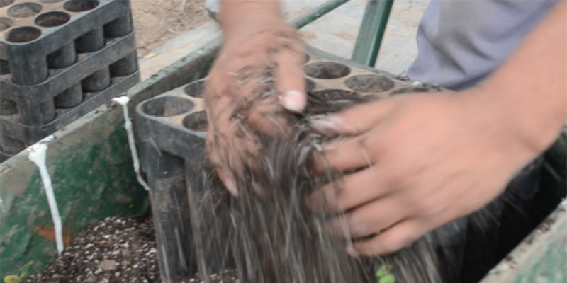
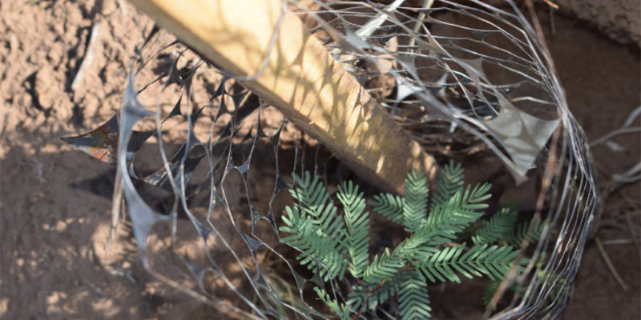

Plantines para restauración. Foto: MAyDS

Plantines para restauración de bosques nativos. Foto: MAyDS
Asimismo, pretende impulsar los mecanismos para establecer una línea base sobre el estado de degradación de los bosques nativos que permita priorizar zonas a nivel de paisaje o cuenca susceptibles y potencialmente oportunas de iniciar un proceso de restauración de los bienes y funciones ecosistémicas de los bosques perdidas por la degradación. En la actualidad se encuentran en ejecución, a través de la financiación del Programa Nacional de Protección de los Bosques Nativos, cuarenta (40) proyectos de restauración.
 Mapa de ubicación de los proyectos de Restauración - fuente: Dirección Nacional de Bosques
Mapa de ubicación de los proyectos de Restauración - fuente: Dirección Nacional de Bosques